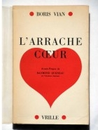
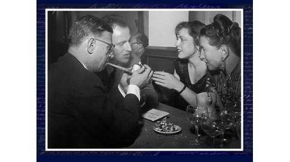

Pour qui s'intéresse à Boris Vian écrivain, elle est le témoin capital: Michelle Vian, née comme lui en 1920, a été sa femme de 1941 à 1952. Elle ne lui a pas seulement donné deux enfants. Elle l'a vu écrire ses dix romans, une soixantaine de nouvelles, d'innombrables poèmes, chroniques, critiques de jazz. Elle était bien placée pour les lire: c'est elle qui tapait ses manuscrits. Ensemble, ils ont inventé Saint-Germain-des-Prés et Saint-Tropez, traduit Chandler et Richard Wright, fréquenté Miles Davis, Charlie Parker et Orson Welles, organisé des surprises-parties où se bousculait toute l'équipe des «Temps modernes».
A 91 ans, Michelle Vian n'a rien oublié de ce tourbillon: ni les échecs littéraires de Boris, ni la manière dont Camus et Merleau-Ponty ont failli en venir aux mains dans leur salle à manger, ni la nuit où elle a fait des frites pour Duke Ellington. Mais elle n'en parlait plus depuis longtemps: «Evoquer Boris, ça touche presque tout de suite à l'intimité. Je suis assez timide.» Aujourd'hui, elle habite un étroit deux-pièces du 6e arrondissement. Sur son bureau, un grand format qui vient de paraître où l'on trouve un joli texte de Prévert, des vers inédits et d'hilarants montages de coupures de presse.
C'est «Boris Vian. Post-scriptum» (Cherche Midi), qu'elle a parcouru sa loupe à la main: «Un beau livre, qui rassemble des feuilles éparses, pleines de dessins que l'on griffonne inconsciemment, de photos, de poèmes, de couleurs. C'est un bel album, à poser sur la table basse du living, et à ranger ensuite au rayon des rêveries.»
G.L.
La rencontre
| «BORIS VIAN. POST-SCRIPTUM. DESSINS, MANUSCRITS, INEDITS», par Nicole Bertolt, avant-propos de Jacques Prévert, Prologue de Siné, Cherche Midi, 200 p., 29,90 euros. |
« C’était pendant l’été 1940, à Capbreton, où nous étions descendus un peu en avance à cause de l’exode. J’étais seule là-bas avec mon frère Pierre-Claude. Mon petit frère s’était noyé, ma mère était partie rejoindre mon père à Agen. Sur la plage, j’ai rencontré Alain, le frère de Boris. Il m’a invitée à une surprise-partie qu’il organisait. J’y suis allée avec mon ami Jacques Loustalot, dit «le Major», qui était du coin. J’y vais, je ne suis pas particulièrement attirée par Boris: je crois que je ne le vois pas. Il est plutôt timide, il reste dans son coin.
C’est avec Alain que je danse : il était blond et prenait des cours de théâtre à Versailles. Enfin, il était plus showy ! C’est plutôt vers lui que j’allais, mais en copain vous savez: j’étais tellement oie blanche! J’étais très serrée à la maison. Mes parents avaient choisi d’habiter le 98 rue du Faubourg-Poissonnière, à Paris, parce que l’appartement donnait sur le lycée Lamartine, de sorte qu’ils pouvaient me surveiller avec des jumelles. Je me demande pourtant bien ce que j’aurais pu faire au lycée Lamartine, qui avait la réputation d’être coincé comme ce n’est pas possible.
Nous avons donné une surprise-partie à notre tour – je me demande bien ce qu’on leur a donné à bouffer, nous n’avions absolument rien... Au bout d’un mois, on est allé à Hossegore à bicyclette. C’est là que j’ai commencé à m’intéresser à Boris, qui s’intéressait à moi depuis un moment. Mais c’est quand même Alain que je devais revoir à Paris. On s’était donné rendez-vous sous l’arc de Triomphe, le truc classique. J’y suis allée, c’est Boris qui était là! Il m’a dit : «Je remplace mon frère.» J’ai dit : « Bien volontiers.» Et nous sommes allés au Pam-Pam des Champs-Elysées, comme faisaient tous les zazous. Le Pam-Pam, c’était une marque de jus de fruits, les zazous ne buvaient pas d’alcool.»
La demande en mariage
« C’était la guerre, mes parents me destinaient un type affreux : il avait un ventre, il suait, mais avait demandé ma main. J’ai donc dû sortir avec lui. Il avait alors essayé de m’embrasser, c’était horrible! Je l’ai raconté à ma mère, elle m’a dit: «Comment, il t’a embrassée, et tu ne veux pas l’épouser? Mais tu es une cocotte !» C’est comme ça que je suis devenue une féministe avant la lettre. J’ai filé retrouver Boris, comme chaque soir, à l’Ecole centrale. Quand je lui ai raconté tout ça, j’ai vu qu’il réfléchissait, qu’il devenait un peu sérieux. Et puis on a parlé d’autre chose. Mais en se quittant, devant le métro, il m’a dit: «Au revoir, madame Vian.» J’ai compris que c’était une demande en mariage.
Je n’étais pas majeure, je n’avais pas encore 21 ans. On aurait pu attendre un an, mais non, Boris voulait se marier. Et puis c’était la guerre. On n’avait aucune idée de l’avenir. A Paris, où on n’avait le droit de rien, il y avait la défense passive, des avions qui volaient, les fenêtres qui étaient encollées de papier bleu. Alors qu’est-ce qu’on en avait à foutre? Les Anglais se faisaient piler à Dieppe, on n’avait pas à manger, on n’avait pas d’électricité, pas de casserole, rien. On était zazous, il n’y avait que le jazz qui comptait… Une vie sans jazz avec les Allemands, ça ne comptait pas. Alors pourquoi ne pas se marier, puisque le lendemain on pouvait être morts?»
Ses parents
« Nous allions tous les week-ends à Ville d’Avray, chez ses parents. On n’avait pas d’argent, il y avait un jardin pour le gosse, nous pouvions le laisser pour sortir le soir à Paris – ce que je ne pouvais pas faire quand j’avais l’enfant. Cette famille m’a d’abord semblé merveilleuse: on parlait beaucoup à table, très librement, et en faisant constamment des jeux de mots enfantins. Puis je me suis aperçue que c’était une fausse liberté. On ne parlait que de petites choses, jamais de la politique, de la guerre ou de ce qui aurait demandé une opinion.
|  |
| "l'Arrache-coeur", de Boris Vian, finit par paraître en 1953, avec une préface de son ami Raymond Queneau - mais pas chez Gallimard. (c)DR |
Comme je connaissais Boris, je savais qu’il y avait autre chose chez lui. Il se forçait pour être au diapason, et cette liberté de ton apparente masquait une contrainte: les enfants ne devaient pas quitter la maison. Pourquoi avaient-ils une salle de bal au fond du jardin? Pour qu’ils n’aillent pas chez les autres. Pourquoi passaient-ils leurs vacances à Landemer, dans un désert, à côté de Cherbourg? Parce qu’ils avaient une grande plage pour eux seuls. C’était une villa isolée, avec un beau jardin.
On retrouve tout cela dans «l’Arrache-cœur», où la mère met des fers aux pieds à ses enfants. C’est son livre le plus signifiant. Boris a eu beaucoup de mal à le finir.»
Au commencement était «Vercoquin»
«Boris a démarré en flèche avec « Vercoquin et le plancton », qui a beaucoup plu à Queneau dès 1945. Mais ça n’était pas destiné à l’impression: c’était juste destiné à faire rigoler les copains. Boris était ingénieur, il n’avait pas idée qu’il serait écrivain. Il faisait des petits poèmes, comme tous les étudiants: dans le genre Villon, puis dans le genre Baudelaire. Boris est passé par tous les genres! On n’y accordait pas beaucoup d’importance. C’était drôle, mais à l’époque tout le monde faisait des vers. On n’avait guère que ça à faire sous l’Occupation.
Il ne s’est considéré comme un écrivain qu’à partir du moment où Queneau lui a dit qu’il en était un, et lui a pris «Vercoquin» en lui demandant quelques aménagements : tous les personnages avaient des noms de barons et de ducs; Queneau trouvait que ça encombrait inutilement. Ils ont été très proches, tous les deux. Boris voyait en lui un père.»
Zazous sous l’Occupation
« La danse et le jazz nous rapprochaient. Et puis je crois que Boris était très attiré par moi : il faut vous dire que j’étais très jolie... Depuis que Charles Trenet le leur avait fait connaître, dès 1937, les zazous écoutaient du jazz. Enfin, ce qu’ils pouvaient écouter. C’était interdit de jouer du jazz américain, les Allemands jouaient du jazz allemand qui n’était pas bon: ils en étaient encore au saxo rieur. Ca avait toujours un côté soldatesque, ils se sont rattrapés après, même si pour la mélodie, ils ne sont pas forts. Mais Boris n’avait pas attendu Trenet. Il était en avance ! Il connaissait le jazz américain dès 1936.
Quand les zazous ont entendu Pétain, les jeunes ont dit: «Ils nous font chier avec leur guerre, on n’en a rien à f...». Ils n’étaient pas mobilisés à ce moment-là, ils avaient 18-19 ans. Pendant la drôle de guerre, les pères étaient à l’armée, les mères pleuraient, les enfants étaient libres. Alors ils écoutaient du jazz, et quand ils ont entendu Pétain, ils sont devenus gaullistes. Pourquoi? Parce que de Gaulle était en Angleterre. Ceux qu’on aimait, parce qu’ils étaient proches et déjà nos alliés, c’étaient les Anglais. On est devenu anglais.
Les zazous portaient le costume anglais de l’époque, qui rappelle celui qu’ont plus tard porté les mods: la veste longue, les deux poches, un peu évasée, cintrée, le pantalon un peu court, mais pas trop, découvrant des chaussettes de laine blanche, absolument, hélas des chaussures en bois parce qu’il n’y avait rien d’autre; les filles, des jupes courtes s’arrêtant au genou, en général écossaises, ou alors volantes, des chaussures en bois, compensées, des petits pull-overs, de n’importe quelle couleur, la coiffure en nid de pie avec les cheveux en arrière, ou alors des résilles, et puis le parapluie. Les garçons avaient la toute petite cravate, en nœud d’épingle, et les cheveux en arrière, avec la queue de canard. Voilà pour les zazous. Quand ils avaient de l’argent, ils essayaient de se faire faire des costumes.
Ce qui nous rassemblait, aussi, c’étaient les films. Les films étaient allemands! Mais il n’y avait que ça. Peut-être un nouveau film par semaine. Alors on se réunissait chez nous, et on dansait. C’était le swing qu’on dansait. Voilà les zazous. On était Anglais, on était contre Pétain, on ne voulait pas aller à la guerre. On n’a connu les Américains que plus tard, même si on connaissait leur jazz.»
La femme du trompette
« A la Libération, on est devenus Américains. Ils dansaient ces Amerlos ! Comme des dieux ! On était étourdis… Boris faisait du jazz depuis longtemps, il s'était inscrit au Hot Club de France à 16 ans. Il avait une trompette assez défoncée, ça n'était pas bon pour son coeur, mais enfin il en jouait, bien. Comme il n'avait pas de souffle, ce n'était pas Armstrong, c'était plutôt Bix Beiderbecke : style Chicago, très rythmé, avec de jolies harmonies.
Avec l'orchestre Abadie, il allait de club en club. Moi j'accompagnais. J'étais la femme du trompette et, surtout, une belle blonde... Et puis je servais d'interprète. Boris avait fait grec-latin-maths et une langue, l’allemand – c’était la voie noble à l’époque. Moi j’avais fait latin-anglais, et comme j’avais passé toutes mes vacances d’été en Angleterre, j’étais bilingue. Alors il m’était d’autant plus facile d’accueillir les Américains. J’ai appris l’anglais à Boris, très vite, en l’espace de six mois.
On ne nous payait pas, mais les soldats américains nous fournissaient des V-discs, qui avaient été enregistrés pour eux, et qu’on ne pouvait pas donner parce qu’ils étaient fragiles : au bout de quatre ou cinq tours ils se cassaient. Tous les musiciens en avaient enregistré pour les soldats, même Ellington. Ca, les soldats américains étaient magnifiquement traités! Surtout par rapport aux nôtres… Ils avaient tout. Et d’ailleurs ils nous apportaient tout: les jeans, les souliers en caoutchouc... Quand ils ont appris qu'on avait un bébé, le lendemain il y avait un camion au bas du faubourg Poissonnière avec du lait, des haricots et des bouquins sur lesquels il était écrit : « Quand vous aurez fini, passez-le à un autre GI.»
Après, il n’y en a plus eu, des Américains. Les politiques, et surtout de Gaulle, n’aimaient pas voir les Américains chez eux. C’était dégueulasse d’ailleurs. Quel était ce mot d’ordre qui était écrit sur tous les murs? GI Go home.»
Les musiciens Don Diaz (à genoux), Claude Luter, Boris Vian, Aimé Barelli et Jacques Dièval (de D à G), autour de Michelle Vian, répètent au Lido de Paris le 4 mai 1948 avant l'ouverture du Festival international de Jazz. ©AFP
Saint-Germain-des-Prés
« On a fait Saint-Germain en y important le jazz. Comme il y avait des gens très intelligents qui fréquentaient le café de Flore, les Deux-Magots et Lipp, c’était un carrefour formidable. Boris et moi y allions pour retrouver l’équipe des «Temps Modernes», Sartre et les autres.
Quand on voulait du jazz, on allait au Lorientais l’après-midi, puis on continuait au Tabou. Je surveillais les entrées avec Anne-Marie Cazalis et Juliette Gréco, nous étions les psychologues de service. Les types qui ne nous plaisaient pas, on leur disait «Vous n’entrez pas». Mais on laissait entrer des types qui n’avaient pas un rond quand ils étaient intéressants, c’est-à-dire quand ils avaient un livre sous le bras: on exigeait des livres. Les étrangers aussi, on les acceptait. A condition qu’ils soient un peu littéraires. C’est comme ça que le Tabou s’est formé, peu à peu. C’était ouvert et c’était fermé. On ne laissait pas entrer n’importe qui, et en même temps, les gens qui entraient étaient n’importe qui. Je crois qu’on y voyait les types sympas.
C’étaient Anne-Marie Cazalis et Juliette Gréco qui avaient trouvé, rue Dauphine, ce café qui fermait très tard parce qu’il était fréquenté par les types des Messageries. Gréco avait eu l’idée de demander leur cave. Il n’y avait pas de salle pour les zazous, c’est pour ça qu’ils sont allés dans les caves. Ce n’est pas seulement à cause du bruit, c’est parce qu’il n’y avait rien. Les types ont dit d’accord. Il a fallu enlever le charbon, c’était humide, dégueulasse. Cazalis et Gréco ont entraîné là ceux qui, les premiers, ont fait le Tabou; c’est-à-dire Merleau-Ponty et Queneau.»
| Boris Vian est à l'honneur, jusqu'au 15 janvier 2012, à la Bibliothèque nationale de France François-Mitterrand, 75013 Paris. Le catalogue est co-édité par la BNF et Gallimard. ©Photo Ingi Paris / akg-images |
Pataphysique
« Queneau et lui s’entendaient très bien. Queneau l’a fait entrer chez les pataphysiciens. Quoique selon moi, ce qu’ils faisaient n’était pas tout à fait de la pataphysique. Enfin, je n’aime pas les pataphysiciens! Cette société secrète, ça faisait un peu cagoulard, et surtout assez infantile... Leurs grosses plaisanteries, qui leur font se taper sur les cuisses, ça ne me faisait pas rire du tout. D’ailleurs je crois qu’ils étaient contents de rencontrer Boris parce que leur Collège de Pataphysique tombait un peu en désuétude à ce moment-là. Boris lui a donné un sang nouveau. Avez-vous lu les «Cahiers de Pataphysique»? Les trucs de Boris étaient bien.»
Camus-Merleau: la dispute
Chez nous, les surprises-parties ont continué après la Libération. Comme, après avoir été prisonniers en Allemagne, mes parents étaient tout de suite partis au Canada, on avait leur appartement du Faubourg Poissonnière entièrement à nous: en hiver on pelait de froid, parce qu’il n’y avait pas de charbon, mais en été, on avait sept grandes pièces.
C’était là que Camus et Merleau-Ponty se sont disputés, dans la salle à manger. Je crois que c’était pour une histoire de camp de concentration russe. Merleau-Ponty avait dû écrire, dans «les Temps modernes» bien entendu, un éditorial sur le sujet. Et Camus trouvait que ça n’était pas assez fort – il cherchait alors querelle à tout le monde. Il a attaqué Merleau-Ponty, qui s’est défendu. Camus a dit: «J’en ai marre!» Il a pris ses cliques et ses claques, il a descendu l’escalier. Jacques-Laurent Bost lui a couru après, Sartre a couru après Bost, mais Camus est parti. Et la rupture avec Merleau-Ponty a été définitive.
Un humoriste aux «Temps modernes»
« «Les Temps modernes» étaient ravis de l’accueillir. Boris était leur égal! Quand il y a publié sa «Chronique du Menteur», il n’y a que Merleau-Ponty qui a tordu le nez. Sartre nous avait confié la traduction d’un livre un peu osé, c’était sur les Indiens et leur mode de vie. Ca s’appelait «la Fumée de leurs feux». Merleau-Ponty n’a pas voulu le publier parce qu’il y avait deux Indiens qui baisaient d’une certaine façon… Quel coincé. Quand on pense qu’il courait après Gréco en miaulant! »
|  |
| Jean-Paul Sartre, Boris et Michelle Vian, Simone de Beauvoir. ©Yves Manciet |
Femmes
« Je me souviens, c’était au cours d’une de nos surprises-parties, très tard. Boris est allé dans la cuisine avec Simone de Beauvoir. Ils ont beaucoup parlé tous les deux. Boris est revenu, et m’a dit: « Oh ! j’ai fait le con.» Ca voulait dire: «Elle m’a fait des avances et je n’y ai pas répondu.» Les femmes intelligentes lui ont toujours fait très peur. Il préférait: «Sois belle et tais-toi.» Ce n’était pas toujours un mari facile à vivre. Et il était jaloux ! Alors qu’il avait toutes les filles de Saint-Germain… Vous savez, on a eu un enfant tout de suite, ça faisait d’un coup une grosse responsabilité. Mais alors il ne fallait pas épouser une oie blanche!»
« Pas une rature »
« Quand il travaillait à l'Afnor [l'Association française de Normalisation, où Vian était ingénieur], il me rapportait le soir dix ou vingt pages que je tapais tout de suite, car j'avais fait deux ans de dactylo. Ses manuscrits étaient nets. Regardez les 450 pages de «l'Ecume des jours», il n'y a pratiquement pas une rature. Il écrivait comme ça. Et quand on lui disait qu'il avait de la chance d'écrire si vite, il se mettait en colère: «Mais j'ai travaillé pour ça, j'ai travaillé vingt ans sur les bancs de l'école et ça me faisait chier !»
En effet, il travaillait de la tête, il avait tout lu; comme moi d’ailleurs. C’est pour ça qu’on s’entendait bien.
Vian traducteur
« Nous avons traduit Chandler, Peter Cheney, Richard Wright, James Agee… Je faisais une première traduction, il la mettait au propre. Il faisait du Vian, comme Baudelaire faisait du Baudelaire avec Edgar Poe. Mais il ne prenait pas vraiment des libertés. Il fallait que le paragraphe respecte la pensée de l’auteur. A l’arrivée, Boris est l’un des rares traducteurs dont on n’a pas besoin de refaire les traductions. Elles sont aussi bonnes depuis cinquante ans. Parce que c’était un écrivain.»
« J'irai cracher sur vos tombes »
« Oui, c'est moi qui ai trouvé le titre. Boris pensait à «J'irai danser sur vos tombes». Je ne trouvais pas ça très révolutionnaire. Il fallait que ce soit très fort, très provocant, mais ce que les gens ne savent pas, c'est que dans les contes hassidiques, ceux d'Isaac Bashevis Singer par exemple, des juifs se font cette menace: «Si tu fais ça, je ne te laisserai jamais tranquille, j'irai te tirer la barbe et cracher sur ta tombe.»
J'étais sûre que le livre marcherait, à condition que Boris n'avoue jamais qu'il en était l'auteur. Je lui disais : « C'est un canular, tu l'as réussi, fais autre chose.» D'ailleurs les autres livres [signés Vernon Sullivan] sont de la même eau, mais un peu moins bons. «Et on tuera tous les affreux», c'est vraiment moins bon.»
| Portrait non daté de l'écrivain français Boris Vian. (c) Afp |
« Jamais une vulgarité »
« J’irai cracher sur vos tombes », c’était bien. «L’Ecume des jours», c’était plus que bien. Un chef d’œuvre. Quand il a été question de lui donner le prix de la Pléiade en 1946, je trouvais ça normal.
C’était beau, sentimental, nouveau. J’avais lu pas mal de littérature, ça tranchait sur tout. Ce n’était ni bête ni vulgaire: il n’y a jamais une vulgarité chez Boris. J’adore son œuvre romanesque, je la mets au pinacle. »
La fureur de vivre
« Il ne dormait pas bien, hélas. Il avait ce qu’on appelle un rhumatisme articulaire, le cœur devait pomper tout le temps : ça formait un gros muscle qui étouffait dans sa poitrine et rétrécissait ses artères. Quand il avait douze ou treize ans, les docteurs avaient dit qu’il ne dépasserait pas la quarantaine. Il avait donc une vie de quatre-vingts ans à fourrer dans quarante ans. Et comme il était particulièrement doué… Il n’était pas vraiment angoissé. Ca se voyait quand il dormait, si vous voulez. Il ne grinçait pas des dents, mais on voyait qu’il était mal. Il était conscient qu’il se ruinait la santé, mais il avait des choses à faire, très vite.»
Les copains, les voitures
« Avec lui, les copains ont toujours passé avant tout. Les copains de Centrale, puis ceux de Saint-Germain, et les copains garagistes… C’était une de ses passions: les voitures, toujours les voitures. Comme il n’avait pas un rond, il achetait de vieilles occasions. Et telles qu’il les achetait, c’étaient de vieilles voitures, pour lesquelles les usines ne faisaient plus de pièces détachées. C’est pour ça qu’il avait des copains dans tous les garages. Nous avons dû visiter tous les garages de France, je pense! »
Milieu littéraire
« Boris était très ami avec Robert Scipion et ceux des «Temps modernes». Puis il s’en est éloigné: j’étais avec Sartre, lui était avec Ursula [Kübler, que Vian a épousée en 1954], on n’avait plus rien en commun. Sartre était pour lui comme un père qui l’avait trahi. Un peu comme Queneau, qui l’a lâché en ne publiant pas chez Gallimard les romans qui ont suivi «L’Ecume des jours». Il lui demandait des arrangements, Boris les faisait mais ça ne collait pas.
Par ailleurs, Boris a cherché à connaître Marcel Aymé, qu’il aimait beaucoup, mais ça n’a pas marché. Marcel Aymé ne voulait voir personne. Boris avait un petit espoir parce que Delaunay, du Hot Club de France, connaissait le tailleur de Marcel Aymé. Comme Boris aimait beaucoup se faire des trucs sur mesure, des vestes un peu vague, quelque chose qui n’était pas tout à fait du déguisement mais enfin qui lui permettait de n’être pas habillé comme tout le monde, il allait chez ce tailleur, du côté de Montmartre. Et il y allait d’autant plus que c’était celui de Marcel Aymé. Je crois qu’il lui a écrit, l’autre ne lui a jamais répondu.
Un que Boris adorait, c’était Pierre Mac Orlan. Il avait lu tous ses livres, ils se voyaient régulièrement. Ca collait très bien entre eux.»
Clichés agaçants
« Quand on parle de lui tout m’agace. Les biographes lui attribuent souvent des choses qui ne sont pas de lui, parce que ça fait plus riche. Ce n’est plus Boris Vian, c’est un dieu. Et du coup il perd toute humanité.»
Saint-Tropez
« C’était juste après-guerre. C’est Freddy Chauvelot, le patron du Club Saint-Germain, qui nous a entraînés là-bas. Boris a accepté d’y aller avec son orchestre. Et comme ça on a pu faire une atmosphère, dans un café de la Ponche, c’est-à-dire chez les pêcheurs, dans le vieux Saint-Tropez, à côté de l’église. Ca donnait sur une petite plage où les bateaux s’échouaient – les pointus.
Ils ont joué, les gens sont venus: d’abord les gens du village, et puis ensuite toute la bande des «Temps modernes», les Pontalis, Claude Lefort, Sartre, d’autres encore. Ils n’y passaient pas forcément de longues vacances, mais tout le monde passait à Saint-Tropez. Gréco et Anne-Marie Cazalis étaient à Juan, mais elles venaient nous voir. On a engagé Mouloudji aussi. Tout ça a fait la réputation de Saint-Tropez.
Les pêcheurs venaient écouter du jazz, au lieu d’écouter du musette. Et certains dansaient, je ne vous dis pas, comme des Américains ! Il ne faut pas oublier que les Américains avaient débarqué là. D’ailleurs Saint-Tropez était encore en partie détruit sur le port. Les pêcheurs nous acceptaient comme on était: en jean et en chemise. Ils nous appelaient les «estrangers du dedans». C’était bien, c’était beau, c’était sympa, ces premiers temps. On avait une maison de pêcheur qu’on louait pour rien du tout. Boris voulait l’acheter, mais il n’avait pas un rond. Et puis tout ça n’était pas fait pour durer.»
| A gauche : Livre d’or de Bimbo et Doublezon. Première page du livret cartonné réalisé par Boris Vian et Alfred Jabès, 36 pages – 1940. [extrait de «Boris Vian. Post-Scriptum», éd. Cherche Midi]. A droite : Squelette pendu. Dessin au stylo Bic bleu sur carnet de notes à spirale – 1953. [extrait de «Boris Vian. Post-Scriptum», éd. Cherche Midi]. ©Cohérie Boris Vian |
Séparation
«C’est Boris qui m’a quittée, en avril 1951. Il a emporté les Marcel Aymé, les Queneau, les disques d’Ellington et de Fats Waller. C’est tout. Et puis «l’Arrache cœur», qu’il n’arrivait pas à finir. Il y a vraiment une coupure dans sa vie. Les romans et les poésies, il les a écrites avec moi. Puis il s’est lancé dans la chanson. Il était dégoûté par ses échecs littéraires, mais c’est aussi qu’il voulait vivre plus vite et gagner de l’argent plus vite: il était bourré de dettes. Le divorce s’est très mal passé, c’était moche, il se sentait coincé. J’avais peur de perdre mes enfants, il n’aurait pas su s’en occuper. C’était un fils, pas un père!»
De l’échec à la Pléiade
« Que Boris soit aujourd’hui à la Bibliothèque nationale, et surtout dans la Pléiade, c’est extraordinaire. D’autant qu’il avait été très déçu, en 1946, de ne pas avoir un prix qui s’appelait le prix de la Pléiade. On le lui avait fait miroiter, il y tenait beaucoup. «L’Ecume des jours» plaisait beaucoup à Beauvoir, Sartre, Queneau et Lemarchand. Mais il y a eu une opposition de Paulhan. Il était sadique, Paulhan. Il disait à Boris qu’il avait de grandes chances, donc Boris était aux anges; en fait il voulait donner le prix à un poète, qui fut Jean Grosjean. Pour Boris, ça été très cruel, très difficile à vivre. Il est sorti à un moment où les vieux tenaient la littérature. «L’Ecume des jours» a été un best-seller quand les jeunes l’ont lu, en collection de poche, en 1963. Boris a toujours eu vingt ans d’avance.»
Propos recueillis par Grégoire Leménager
A VOIR
EXPOSITION
Boris Vian, Bibliothèque nationale de France, Paris 13e. Rés. : 01-53-79-49-49 ou visites @ bnf.fr. Jusqu'au 15 janvier 2012.
A LIRE
BORIS VIAN, catalogue de l'exposition, sous la direction d'Anne Mary, BNF/ Gallimard, 192 p., 39 euros.
BORIS VIAN. POST-SCRIPTUM. DESSINS, MANUSCRITS, INEDITS par Nicole Bertolt, Cherche Midi, 200 p., 29,90 euros.
A ECOUTER
COFFRET BORIS VIAN, lu par Arthur H, Denis Podalydès, Thibault de Montalembert, François Marthouret, Audiolib, 3 CD, 39 euros.
Source: Version intégrale de l'article paru dans "le Nouvel Observateur" du 27 octobre 2011.